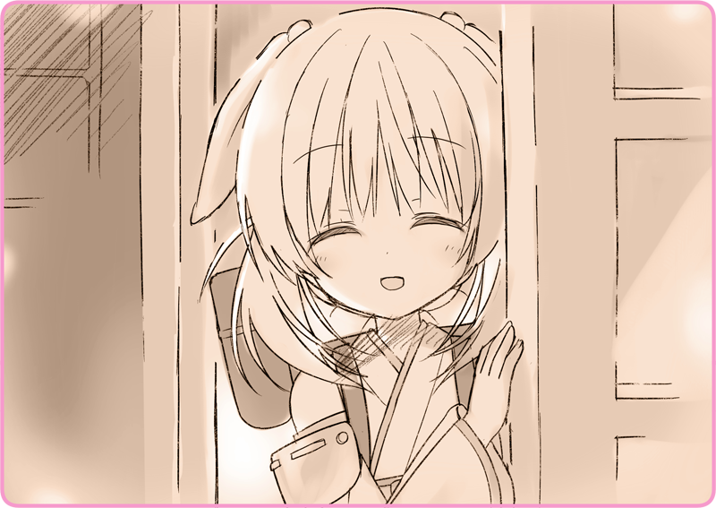

プリマドール・アンコール
03-02 冬の花火（２）
頭からすっぽりストールに包まれて、暗がりの中じっと息を潜める。
月明かりだけが差し込んでいる室内。
時折、遠い花火の音が聞こえてきて、僅かに明滅する。
吐く息は白いが、寒さは耐えられないほどではない。
隣には車椅子。物言わぬ人形の姿。
リリアは応接室の隣で、時が過ぎるのを待ち続けていた。
微かなオイルの匂い。机の上には雑多な工具が散乱しており、壁際にはその用途も定かでは無い計器類。あの子――灰桜の整備室なのかもしれない。椅子には乱雑にコートが脱ぎ捨てられている。肩に徽章が見えた。
『…こんな日にお仕事とは、大変ですね～…』
『…ああ、これはすまないね。うん、いい紅茶だ……』
隣室から微かな灯りが漏れる。時折笑い声も。てっきり警官を門前払いしてくれるものかと思っていたが、室内に招き入れて、おまけに暖かなお茶まで振る舞っている。いったいどういうことなのだろうか……。
『…では、また遠間博士が帰ってきたらお邪魔するよ。ありがとう…』
たっぷり休憩を取って、警官たちは去っていった。
しばらく静寂。花火の音。そして……

ちょっとだけ扉を開けて、にこやかな顔を見せてくれた。大丈夫と言いつつ、ささやき声なのがおかしい。
「よかった……なにか聞かれなかった？」
ほっと安堵の息を漏らす。暖炉の前に立つと、心まで溶けていくようだった。
「遠間博士って誰かしら？」
人形には必ず管理・監督を取り仕切る所有者が存在する。マスターの命令には絶対服従で、勝手な行動は許されないのだ。
「……私を匿って大丈夫なの？」
「その、マスターに怒られたりしない？」
「それは、そうなんだけど」
ぱあっと明るい顔で笑う。
なんだか心配した自分が馬鹿みたいだ。
「ありがとう、いただくわ……」
微かな香気。すこし温くなったお茶で、冷たく乾いた喉を潤した。
＊ ＊ ＊
「私はね、もう帰る場所がないの」
いつしか花火も終わっていた。
薄暗い室内、暖炉を見つめながら、リリアは言葉を選んで伝えていく。
「あの子を持ち出した以上、もう劇団には戻れないわ」
「……お母さんとお父さんのところ。もう何年も会ってないけれど」
「ローベリアに」
その言葉に、灰桜は目をぱちくりさせる。
「そんな簡単にいけるわけないわ」
灰桜は、壁にかかった地図を指し示す。
列車で二時間も移動して、そこから森を抜けて一昼夜歩けば辿り着くかもしれない。
「戦争中よ。国境線を超えられるわけないでしょう」
納得した様子で、ぽんと手を叩く。事情が分かっているのか、いないのか。
「共同租界まで行って、そこから船便に乗るの。そしてローベリアに亡命する……それが唯一のルート」
「そうね。そんなお金があれば……ね」
共同租界まで行って、ビザを入手して、ほとんど世界を一周するような船便に乗る。果たしていくらかかるのだろうか？ リリアには想像もできなかった。
「たぶん足りないわ。稼がないと……」
「仕事をしたり、物を売ったり……」
なんだか納得した様子で、灰桜はうんうん頷いている。
「え？」
＊ ＊ ＊
一夜明けて、からりと晴れた青空がどこまでも広がっている。
雪はすっかり止んで、辺りは一面の銀世界。
灰桜の煙突からは、白い蒸気がぽっぽっと吹き出していた。
「い、いかがでしょうか……」
リリアの前には、部屋から持ち出した小机がひとつ。
伏せて重ねられたティーカップに、大きなシュガーポットがひとつ。
地図の裏に書いた宣伝ポスターが、いかにも即席で作りましたという雰囲気で貼られている。
「……あのね、灰桜」
執筆：丘野塔也 挿絵：まろやか ＣＶ：和氣あず未（灰桜）
©VISUAL ARTS / Key
Bản dịch tiếng Việt thực hiện bởi Vietnam Key FanClub